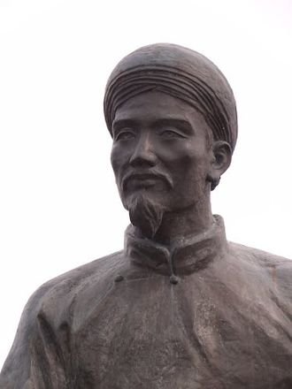

|
Nguyen Du (阮攸; 3 January 1766 – 16 September 1820), pen names To Nhu (素如) and Thanh Hien (清軒), is a celebrated Vietnamese poet who wrote in chu nom, the ancient writing script of Vietnam. He is most known for writing the epic poem The Tale of Kieu.
Youth
Nguyen Du was born in a great wealthy family in 1766 in Bich Cau, Thang Long. His father’s name is Nguyen Nghiem, who was born in Tien Đien village, Nghi Xuan, Ha Tinh, Vietnam. He was the seventh child of Nguyen Nghiem, a former prime minister under the Le dynasty. By the age of thirteen, Nguyen had lost both of his parents, so for most of his teen years he lived with his brother Nguyen Khản or with his brother-in-law Đoan Nguyen Tuan.
At the age of 19 (some sources say 17), Nguyen passed the provincial examination and received the title of "tu tai" (Bachelor's degree), which made him (very roughly) the equivalent of a high school graduate. However, in Nguyen Du's time this was a far more difficult credential to obtain both because few people were affluent enough to devote themselves to study and because of exacting standards applied.
Nguyen's mother was his father's third wife, noted for her ability at singing and composing poetry. In fact, she made her living by singing, which at that time was considered a disreputable occupation. It is said that Nguyen may have inherited a part of his talents from his mother. He loved listening to traditional songs; and there was a rumor that, when he was 18, he himself eloped with a songstress.
Adulthood
After passing the provincial exam, he was appointed to the position of a military advisor in the Royal (Trinh) army. After the Trinh lords were defeated in 1786 by Nguyen Hue (the second youngest, most able and popular of the three Tay Son brothers), Nguyen Du refused to serve in the Tay Son administration. He was arrested and held for some time before moving back to his native village in the north of the country.
When Nguyen Anh defeated the Tay Son and took control over all of Vietnam in 1802, Nguyen Du agreed to serve in his administration (many mandarins from the north refused to do this as it was widely felt that a mandarin should only serve one dynasty). At first he was given his old post of military advisor but after a decade he was promoted to ambassador to China (1813). While in China, he discovered and translated the Ming dynasty era tale that would become the basis for the Tale of Kieu. He was later appointed to two more diplomatic missions to Peking, but before he could depart for the last one, he died of a long illness for which he refused treatment.
Nguyen's father had been a minister under the Le dynasty, and his family had benefited greatly under their rule. For most of his life, Nguyen Du was haunted by what he felt was his own betrayal of the rightful rulers of Vietnam, which occurred when he accepted a post under the Nguyens.
|

Nguyen Du (1766-1820)
|